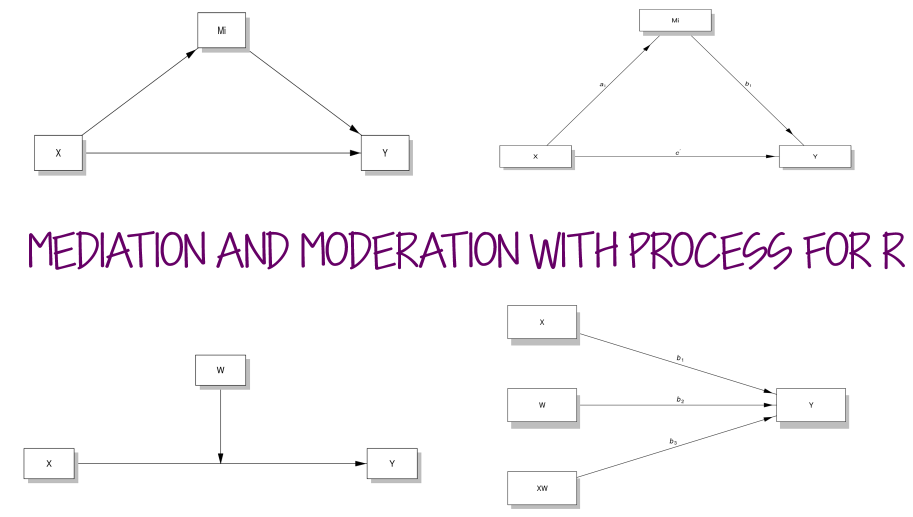
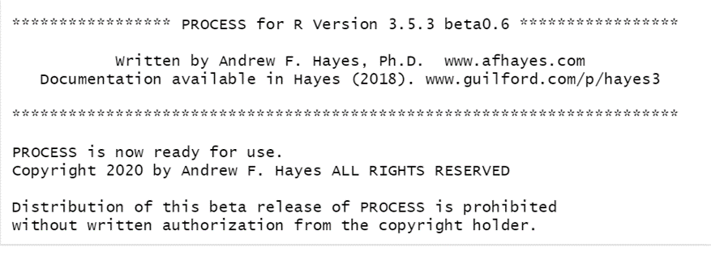
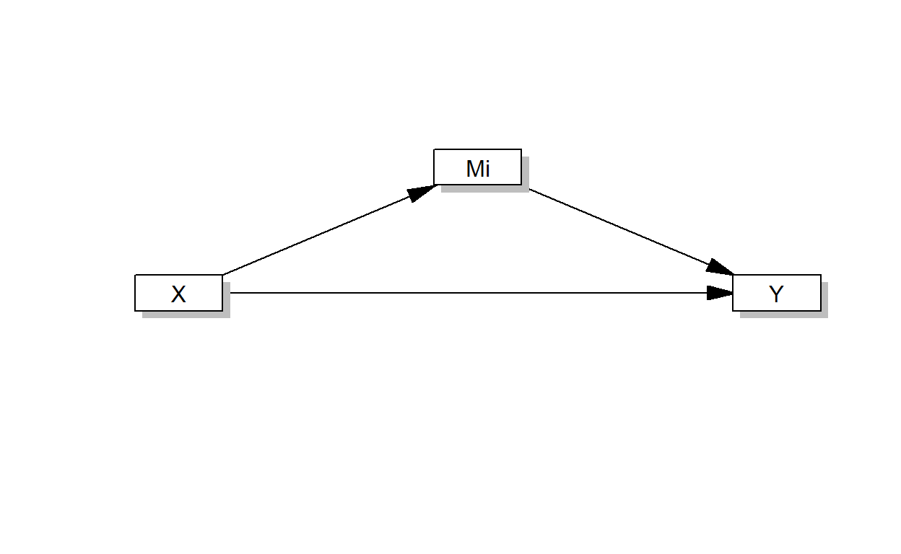
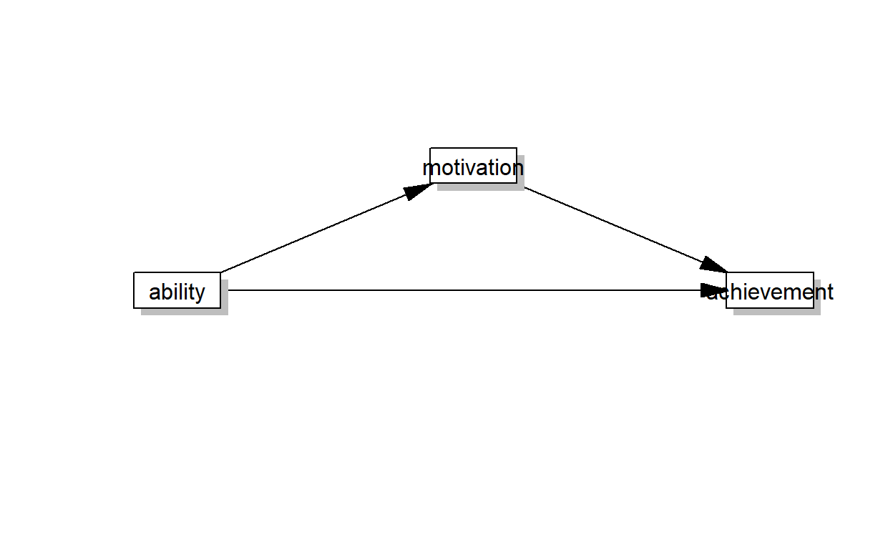
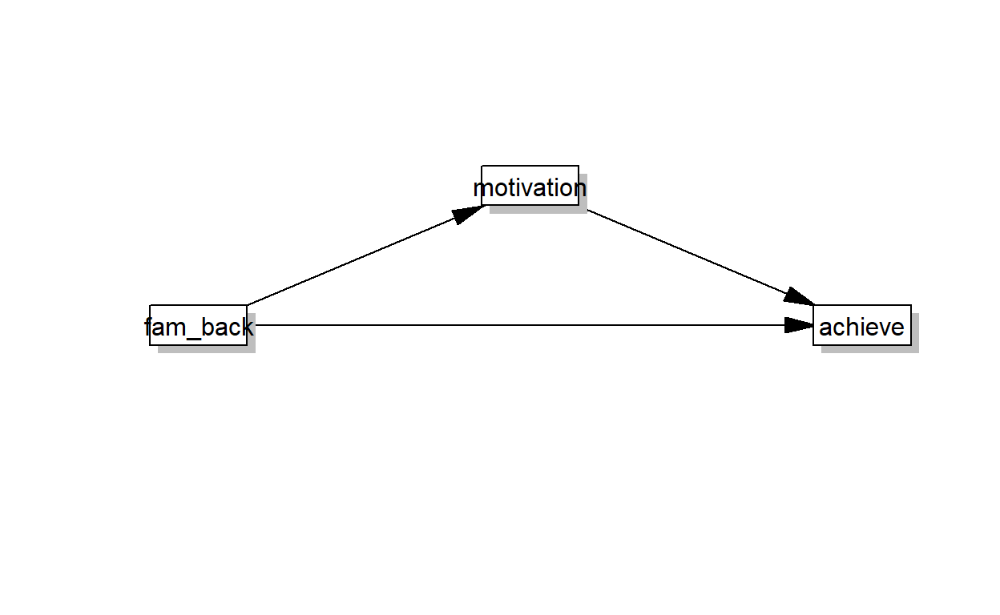

Getting Started

PROCESS was developed by Andrew Hayes in conjunction with the book Introduction to Mediation, Moderation, and Conditional Process Analysis. The book is about to be in its 3rd edition. The citation for the 2nd edition of the book is in the syllabus for RS 932.
PROCESS was originally developed for SPSS, and is now also available for SAS and R. In this tutorial, you’ll learn how to use PROCESS to run mediation and moderation models.
There are two ways you can run PROCESS in R. Andrew Hayes released an R script with version 3.5 of the PROCESS macro. You can download it here (the file will contain the SPSS and SAS macros as well).
PROCESS R Script
Once you have downloaded PROCESS from the website, you can open the script file (“process.R”). Note that is a script file and not a package. When you want to use PROCESS, you will need to run the script file first. The script is huge, so it takes a couple of minutes for it to load (depending on how fast your computer is). Once the script is loaded, you will get the following message:

You will also see the PROCESS function in your Environment under “Functions”.
Running PROCESS: Mediation
The Appendix for Introduction to Mediation, Moderation, and Conditional Process Analysis contains figures for every type of model that can be run with PROCESS. There are more than 70 that vary from the very simple to the very complex. For this example, we will use Model 4, which is a simple mediation model with one mediator. The conceptual model for this figure looks like this:

We’ll use the data from Chapter 11 of the Keith book that examines whether motivation mediates the relationship between ability and achievement. Here is the model with the variable names included:

A few things to take care of before you run the model with the process script:
- Make sure all missing data is coded as NA
- Make sure all data is numeric. If you have a categorical moderator that is factored in R, you’ll need to convert to numeric format.
- Include
progress = 0in yourprocesscode so that you don’t get a progress completion bar for bootstrapping in your output (not sure why this was included…you don’t need it). Bootstrapping takes some time. Be patient. The results will appear when bootstrapping is complete.
CODING EXAMPLE
To run a simple mediation model, we need to specify the data file, and then each piece of the model (x, m, y), with variable names in quotation marks. We also need to specify which model we would like to use (in this case, model = 4).
process(data=ex1data,y="achieve",x="ability",m="motivate",model=4, progress = 0)##
## ***************** PROCESS for R Version 3.5.3 beta0.6 *****************
##
## Written by Andrew F. Hayes, Ph.D. www.afhayes.com
## Documentation available in Hayes (2018). www.guilford.com/p/hayes3
##
## ***********************************************************************
##
## Model : 4
## Y : achieve
## X : ability
## M : motivate
##
## Sample size: 1000
##
## Random seed: 465345
##
##
## ***********************************************************************
## Outcome Variable: motivate
##
## Model Summary:
## R R-sq MSE F df1 df2 p
## 0.2050 0.0420 95.8935 43.7808 1.0000 998.0000 0.0000
##
## Model:
## coeff se t p LLCI ULCI
## constant 36.3333 2.0886 17.3963 0.0000 32.2349 40.4318
## ability 0.1367 0.0207 6.6167 0.0000 0.0961 0.1772
##
## ***********************************************************************
## Outcome Variable: achieve
##
## Model Summary:
## R R-sq MSE F df1 df2 p
## 0.7446 0.5544 44.6453 620.3194 2.0000 997.0000 0.0000
##
## Model:
## coeff se t p LLCI ULCI
## constant -3.0745 1.6269 -1.8899 0.0591 -6.2670 0.1179
## ability 0.4765 0.0144 33.0928 0.0000 0.4483 0.5048
## motivate 0.1085 0.0216 5.0222 0.0000 0.0661 0.1509
##
## ***********************************************************************
## Bootstrapping in progress. Please wait.
##
## **************** DIRECT AND INDIRECT EFFECTS OF X ON Y ****************
##
## Direct effect of X on Y:
## effect se t p LLCI ULCI
## 0.4765 0.0144 33.0928 0.0000 0.4483 0.5048
##
## Indirect effect(s) of X on Y:
## Effect BootSE BootLLCI BootULCI
## motivate 0.0148 0.0038 0.0080 0.0230
##
## ******************** ANALYSIS NOTES AND ERRORS ************************
##
## Level of confidence for all confidence intervals in output: 95
##
## Number of bootstraps for percentile bootstrap confidence intervals: 5000CODING EXERCISE
There are a few other variables in the ex1data data frame that we can use to examine mediation models. Use process to determine whether coursework (course) mediates the relationship between family background (fam_back) and achievement (achieve).
process(data = dataset, x = "IV", m = "mediator", "y = DV", model = 4, progress = 0)process(data = ex1data, x = "fam_back", m = "course", y = "achieve", model = 4, progress = 0)Running PROCESS: Moderation
Running a simple (one moderator) moderation model is also fairly straightforward, and follows the same coding syntax that we used for mediation, with a few changes:
- Instead of
m = mediatorwe will instead usew = moderator.
- We need to change the model number to
model = 1. - We can request the Johnson-Neyman regions of significance using
jn=1. - We can have
processautomatically apply centering to the predictor and moderator withcenter=1.
We’ll return to the moderation example from Chapter 8 of the Keith book: Does a child’s ability level moderate the relationship between tv viewing and achievement? The tvability dataset has been pre-loaded. Let’s run the model!
process(data = tvability, x = "TV", w = "ABILITY", y = "ACHIEVE", model = 1, progress = 0, jn=1, center=1)##
## ***************** PROCESS for R Version 3.5.3 beta0.6 *****************
##
## Written by Andrew F. Hayes, Ph.D. www.afhayes.com
## Documentation available in Hayes (2018). www.guilford.com/p/hayes3
##
## ***********************************************************************
##
## Model : 1
## Y : ACHIEVE
## X : TV
## W : ABILITY
##
## Sample size: 500
##
##
## ***********************************************************************
## Outcome Variable: ACHIEVE
##
## Model Summary:
## R R-sq MSE F df1 df2 p
## 0.7300 0.5330 35.6690 188.6754 3.0000 496.0000 0.0000
##
## Model:
## coeff se t p LLCI ULCI
## constant 49.7589 0.2714 183.3636 0.0000 49.2257 50.2921
## TV -0.3563 0.1563 -2.2789 0.0231 -0.6635 -0.0491
## ABILITY 0.6090 0.0287 21.2229 0.0000 0.5526 0.6653
## Int_1 -0.1155 0.0164 -7.0257 0.0000 -0.1478 -0.0832
##
## Product terms key:
## Int_1 : TV x ABILITY
##
## Test(s) of highest order unconditional interaction(s):
## R2-chng F df1 df2 p
## X*W 0.0465 49.3612 1.0000 496.0000 0.0000
## ----------
## Focal predictor: TV (X)
## Moderator: ABILITY (W)
##
## Conditional effects of the focal predictor at values of the moderator(s):
## ABILITY effect se t p LLCI ULCI
## -9.4040 0.7297 0.2347 3.1086 0.0020 0.2685 1.1909
## -0.4040 -0.3096 0.1574 -1.9671 0.0497 -0.6189 -0.0004
## 9.5960 -1.4644 0.2060 -7.1103 0.0000 -1.8691 -1.0598
##
## Moderator value(s) defining Johnson-Neyman significance region(s):
## Value % below % above
## -6.5130 25.2000 74.8000
## -0.4070 48.8000 51.2000
##
## Conditional effect of focal predictor at values of the moderator:
## ABILITY effect se t p LLCI ULCI
## -25.4040 2.5773 0.4659 5.5319 0.0000 1.6619 3.4927
## -22.6540 2.2598 0.4235 5.3355 0.0000 1.4276 3.0919
## -19.9040 1.9422 0.3818 5.0867 0.0000 1.1920 2.6924
## -17.1540 1.6246 0.3410 4.7644 0.0000 0.9547 2.2946
## -14.4040 1.3071 0.3014 4.3364 0.0000 0.7148 1.8993
## -11.6540 0.9895 0.2637 3.7529 0.0002 0.4715 1.5075
## -8.9040 0.6719 0.2286 2.9391 0.0034 0.2228 1.1211
## -6.5130 0.3958 0.2015 1.9648 0.0500 -0.0000 0.7917
## -6.1540 0.3544 0.1977 1.7921 0.0737 -0.0341 0.7429
## -3.4040 0.0368 0.1733 0.2124 0.8319 -0.3036 0.3772
## -0.6540 -0.2808 0.1582 -1.7747 0.0766 -0.5916 0.0301
## -0.4070 -0.3093 0.1574 -1.9648 0.0500 -0.6186 0.0000
## 2.0960 -0.5983 0.1553 -3.8524 0.0001 -0.9035 -0.2932
## 4.8460 -0.9159 0.1652 -5.5430 0.0000 -1.2405 -0.5913
## 7.5960 -1.2335 0.1859 -6.6342 0.0000 -1.5988 -0.8682
## 10.3460 -1.5510 0.2143 -7.2380 0.0000 -1.9721 -1.1300
## 13.0960 -1.8686 0.2477 -7.5436 0.0000 -2.3553 -1.3819
## 15.8460 -2.1862 0.2844 -7.6870 0.0000 -2.7449 -1.6274
## 18.5960 -2.5037 0.3233 -7.7454 0.0000 -3.1388 -1.8686
## 21.3460 -2.8213 0.3636 -7.7598 0.0000 -3.5356 -2.1069
## 24.0960 -3.1389 0.4049 -7.7515 0.0000 -3.9344 -2.3433
## 26.8460 -3.4564 0.4470 -7.7319 0.0000 -4.3347 -2.5781
## 29.5960 -3.7740 0.4897 -7.7069 0.0000 -4.7361 -2.8119
##
## ******************** ANALYSIS NOTES AND ERRORS ************************
##
## Level of confidence for all confidence intervals in output: 95
##
## W values in conditional tables are the 16th, 50th, and 84th percentiles.
##
## NOTE: The following variables were mean centered prior to analysis:
## ABILITY TVWhile the process script mimics what you would get via SPSS, it doesn’t really take advantage of many of the benefits of running analyses in R. The documentation is pretty sparse for the R version, and the book appendices just instruct you to adapt the code from SAS. If you really want to (or for some reason, need to) use PROCESS, you may be better off just pulling your data into SPSS, installing the SPSS PROCESS macro, and running your analysis there.
The next section of this tutorial will show you how to use this package, called processR. This package is not created or endorsed by Andrew Hayes. Because the package is fairly new and the documentation leaves a lot to be desired, I’d only recommend using it for graphical purposes at this point. But it does create nice figures and can help you visualize your models. If and when the documentation improves, then it may be a good option for running mediation/moderation models in R.
processR
The processR package is a new package developed by Keon-Woong Moon. Install the package using install.packages function.
install.packages("processR")You can find documentation for the package HERE, and the vignette for the package HERE.
There is also an RPubs page with a demonstration of how to use processR HERE
Model Figures
processR will create a figure for 57 different types of PROCESS models. Model numbers correspond to those in the appendix of the Hayes book.
Here is the code and figure for a simple mediation model:
processR::pmacroModel(4)
You can also add labels to figure.
labels=list(X="fam_back",M="motivation",Y="achieve")
processR::pmacroModel(4,labels = labels)
To get a statistical diagram that includes path names, use statisticalDiagram(model#)
processR::statisticalDiagram(4,labels = labels)